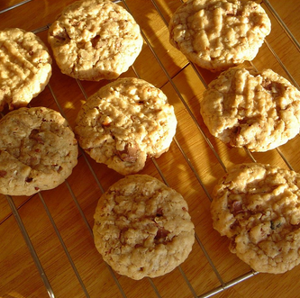

Oatmeal Cookies

Description
Oatmeal cookies.
Ingredients
- 1 cup butter, softened
- 2 eggs
- 1 cup packed brown sugar
- 1 cup white sugar
- 1 teaspoon vanilla extract
- 1 teaspoon baking soda
- 2 cups all-purpose flour
- 3 cups rolled oats
- 1/2 teaspoon salt
Steps
- Preheat oven to 350 degrees F
- Grease cookie sheets
- In a large bowl, cream together butter, brown sugar and white sugar until smooth.
- Beat in eggs and vanilla.
- Combine flour, baking soda, and salt; stir into the creamed mixture. Mix in the oats.
- Bake for 10 minutes. Allow cookies to cool for 5 minutes.
Index